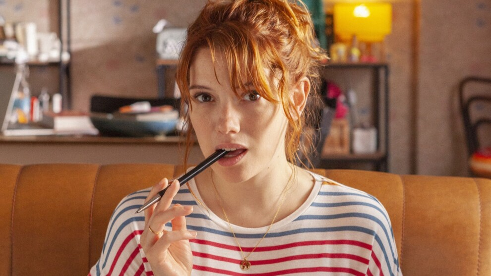
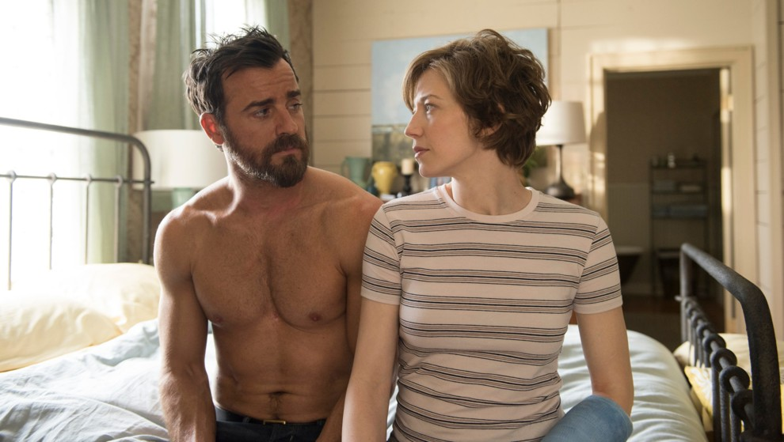
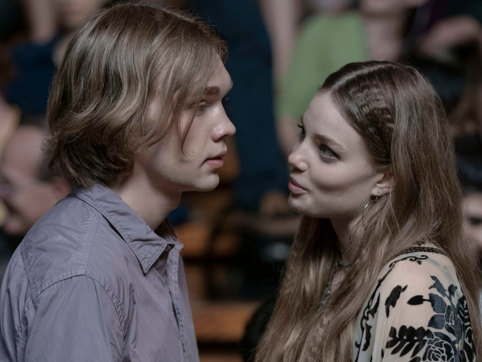
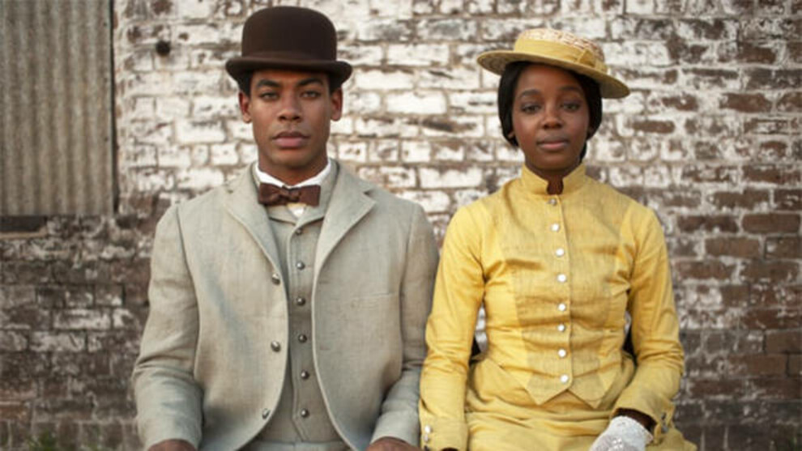
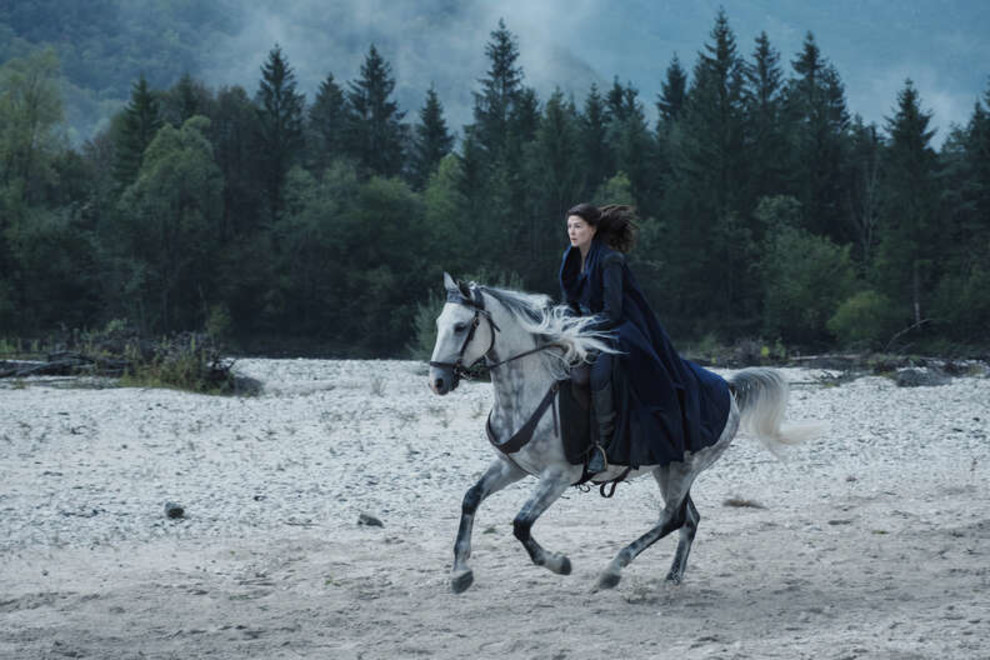
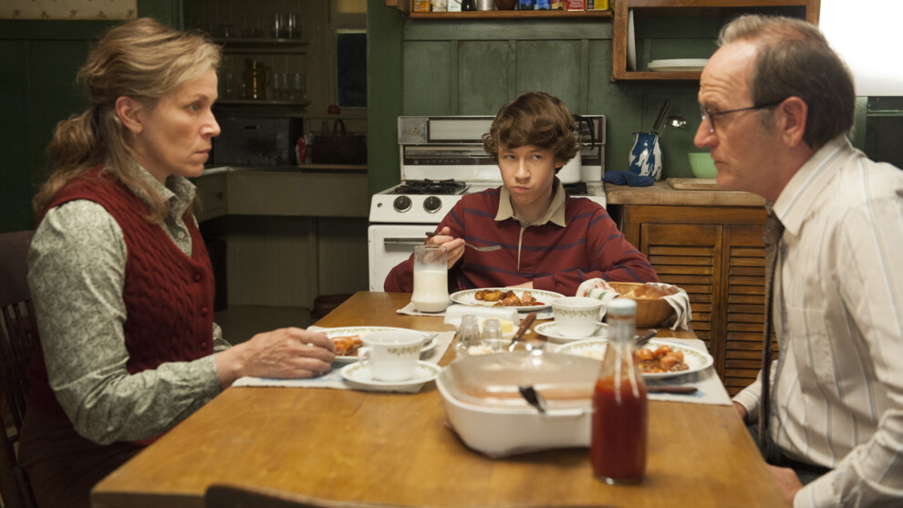

"Валерия"
"Валерия" – очаровательная испанская драма, которая больше всего напоминает "Секс в большом городе". Ее главная героиня – 30-летняя писательница Валерия, которая пытается справиться с творческим и личным кризисом, и находит поддержку у трех подруг. Как и в "Сексе в большом городе", четверка девушек тусуется, танцует, пьет коктейли (это первый план), искренне делясь друг с другом сами сокровенным и помогая преодолеть кризис. В основе сериала – книга популярной испанской писательницы Элизабет Беневант, история которой сами вполне может быть экранизирована. Элизабет всегда мечтала опубликовать книгу, но долго не находила на это средств. Опубликовав в 2013 году свои автобиографичные заметки о приключениях писательницы Валерии на платформе Amazon, она получила такой теплый отклик читателей, что ей моментально позвонили из нескольких издательств и предложили круглый гонорар за дебютный роман. В итоге права на экранизацию "Валерии" купил Netflix.
«Оставленные»
Один из самых успешных сериалов HBO, который шел на канале с 2014 по 2017 годы – по-настоящему мрачный и драматичный, с блестящей музыкой современного композитора Макса Рихтера. Джастин Теру играет шефа полиции Кевина, который вынужден поддерживать порядок в штате Нью-Йорка после того, как мир буквально сходит с ума. События происходят после «Внезапный уход» – когда 2 процента земли исчезает бесследно, а часть людей присоединяются к культу «Виновных оставшихся». Присоединяется к нему и жена Кевина, а тому только и остается, что спасать мир. "Оставленные" – экранизация бестселлера Тома Перроты, писателя и сценариста, чьи сюжеты всегда блестяще превращаются в кино – например, экранизация его романа «Как малые дети» в 2007 году была номинирована на "Оскар".
"Уборщица"
Маргарет Куэлли, о которой мир узнал после фильма "Однажды в Голливуде" Квентина Тарантино, играет главную роль в новом сериале "Уборщица: История матери-одиночки". Она играет молодую мать, которая моет туалеты богатых людей, чтобы обеспечивать маленькую дочь. Партнершей Маргарет на съемках стала ее мать, актриса Энди Макдауэлл – в фильме она также сыграла мать героини Куэлли. Сериал снят на основе мемуаров Стефани Лэнд «Уборщица. История матери-одиночки, вырвавшейся из нищеты» и это один из лучших сериалов об абьюзе и эмоциональном насилии, вышедших в последнее время.
«В поисках Аляски»
«В поисках Аляски» – роман популярного американского писателя, мастера подростковой литературы Джона Грина. В 2005 книга была признана лучшим романом года, написанным для подростков, а в 2019 году историю Грина экранизировал Hulu. В центре сюжета – 16-летний Майлз Холтер, который отправляется в академию Калвер-Крик, чтобы разгадать последние слова Франсуа Рабле «Иду искать Великое "Возможно"». В школе парень находит друзей, влюбляется в девушку по имени Аляска Янг, а трагические события, произошедшие с ним, помогают разгадать тайну слов Рабле. В роли Майлза – талантливый юный актер Чарли Пламмер ("Все деньги мира"), лауреат премии Марчелло Мастрояни Венецианском кинофестиваля. Кстати, именно Пламмер мог сыграть Человека-паука, но в итоге его опередил Том Холланд.
"Подземная железная дорога"
Экранизация самого громкого американского романа последних лет. Барак Обама назвал "Подземную железную дорогу" великим американским романом и внес в свой ежегодный рейтинг книг, которые необходимо прочесть всем. Книга вышла в 2016 году и получила ключевые литературные премии – Национальную книжную премию США и "Пулитцера". Действие происходит в Америке до Гражданской войны и рассказывает об освобождении от рабства. Главная героиня Кора работает на плантации хлопка в Джорджии и решает бежать, когда узнает о существовании Подземной железной дороги. По дороге Кора убивает молодого белого парня, который пытается поймать ее. Режиссер сериала – Барри Дженкинс, оскаровский номинант за фильмы "Лунный свет" и "Если бы Билл-стрит могла говорить"
"Колесо времени"
Сериал «Колесо времени» наверняка оценят любители фэнтези. Он снят по одноименной серии Роберта Джордана, которая вошла в историю как один из самых масштабных фэнтези-романов: это сага из 11 томов, которая насчитывает более 300 персонажей. При этом во всем мире "Колесо времени" страшно популярная книга, во многом потому, что вдохновлена и написана в стиле бессменной саги Толкиена "Властелин кольца". В 2021 сериал экранизировал Amazon, еще до премьеры продлив его сразу на 2 сезона. В шоу идет речь о юношах из небольшой деревни — Двуречья — Ранде, Перрине и Мэте, на которых начинает охотиться Тёмный и его приспешники. Справиться со злом им помогает Морейн Дамодред, влиятельная член женского ордена (в исполнении Розамунд Пайк). Сериал роскошно снят и вполне может заменить "Игру престолов", если вы скучаете за этим шоу.
«Оливия Киттеридж»
Четырёхсерийный мини-сериал HBO "Что знает Оливия" стоит посмотреть только потому, что главную роль там играет блестящая Фрэнсис Макдорманд, обладательница "Оскара", "Золотого глобуса", "Эмми" и звезда многих фильмов братьев Коэн. "Что знает Оливия" сняла американский режиссер украинского происхождения Лиза Холоденко: это увлекательная и трогательная история о 25 годах из жизни простой школьной учительницы Оливии Киттеридж. В основе сериала – нашумевшая книга Элизабет Страут, которая в 2013 году получила за свой тонкий, умный, трогательный роман Пулитцеровскую премию.